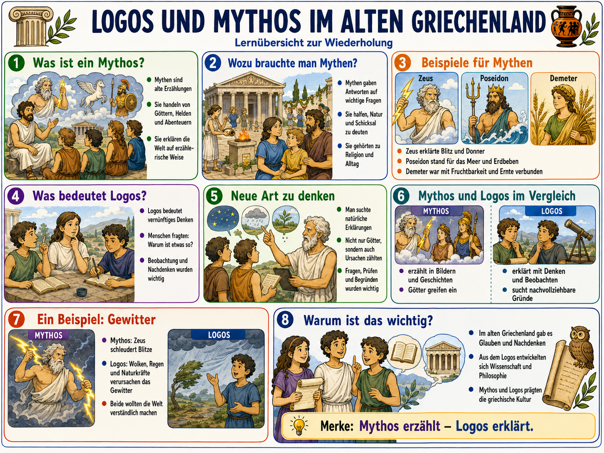
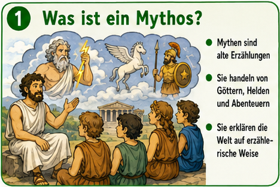
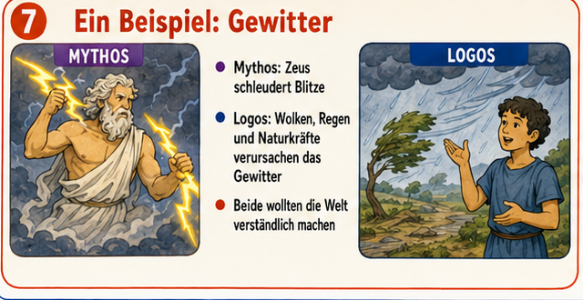

Dieses Modul zeigt eine wichtige Denkbewegung der Antike: Menschen erklaerten die Welt
zuerst stark ueber Goettergeschichten (Mythos) und zunehmend auch ueber Beobachtung,
Begruendung und Nachdenken (Logos).

Die Grafik ist unser Leitfaden. In der Lernreise arbeiten wir gezielt mit den einzelnen Boxen.
Lernidee fuer Klasse 5
Wir trennen nicht in "richtig" gegen "falsch". Stattdessen lernst du zwei Denkwege kennen:
Mythos erzaehlt und Logos erklaert. Beide halfen Menschen, die Welt
zu verstehen, aber auf unterschiedliche Weise.
1. Verstehen
Was ist Mythos? Was ist Logos?
2. Vergleichen
Wie unterscheiden sich Erklaerungen?
3. Anwenden
Selbst Aussagen zuordnen und pruefen.
4. Bewerten
Warum war der Uebergang fuer Wissenschaft wichtig?
Boxen-Explorer
Klicke eine Station an. Du bekommst jeweils Bildausschnitt, Kernidee und Faktencheck.

Gewitter doppelt erklaert
In Mythen kann ein Gewitter als Eingriff eines Gottes erscheinen (z. B. Zeus). Logos fragt:
Welche natuerlichen Prozesse kann man beobachten? So entstand Schritt fuer Schritt
naturkundliches Denken.
Moderne Naturwissenschaft erklaert Donner als Folge von stark erhitzter Luft entlang
eines Blitzkanals. Das zeigt den Kern von Logos: nachvollziehbare Gruende statt
reine Erzaehlung.

Am Beispiel Gewitter erkennt man den Denkwechsel besonders gut.
Fruehe Denker und der Beginn von Naturerklaerungen
Thales von Milet
Gilt als frueher Philosoph, der Natur ohne Goettergeschichten zu erklaeren versuchte.
Anaximander
Suchte nach einheitlichen Naturerklaerungen und beschaeftigte sich auch mit Wetterphaenomenen.
Wichtig fuer Klasse 5
Mythos verschwand nicht ploetzlich. Erzaehlen und Nachdenken existierten lange nebeneinander.
Quellen und kritische Pruefung
Die Inhalte wurden mit Fachquellen abgeglichen: Begriffe, historische Einordnung und
Naturbeispiel (Donner/Gewitter). So wird die Grafik sinnvoll ergaenzt statt nur nacherzaehlt.